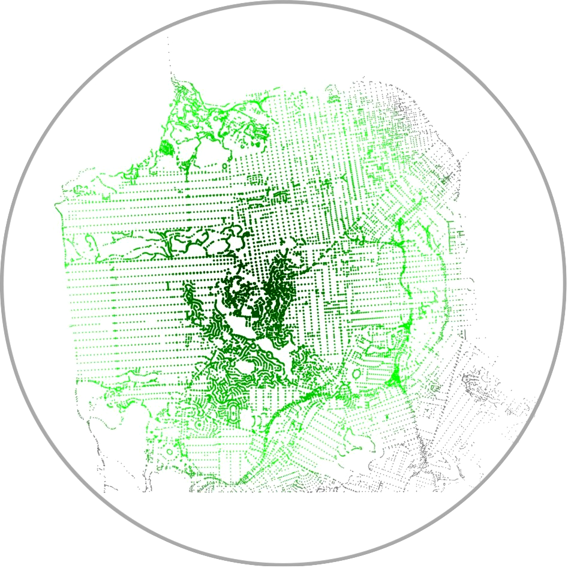
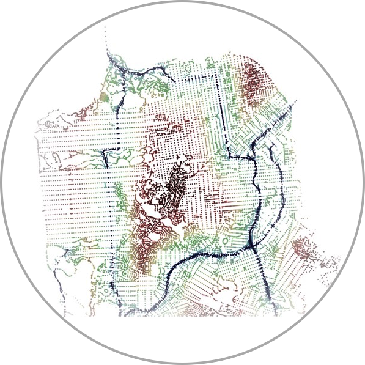
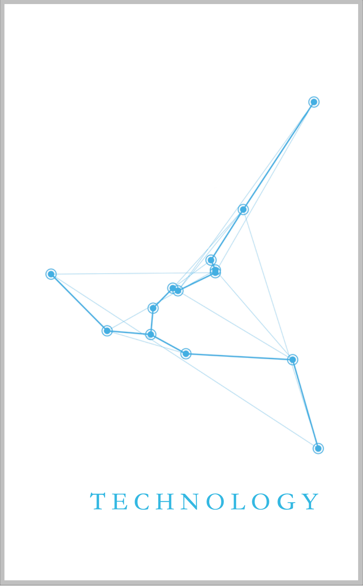
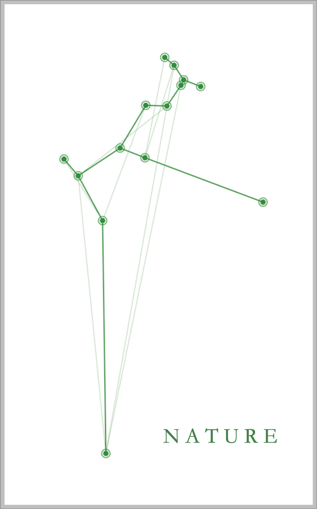
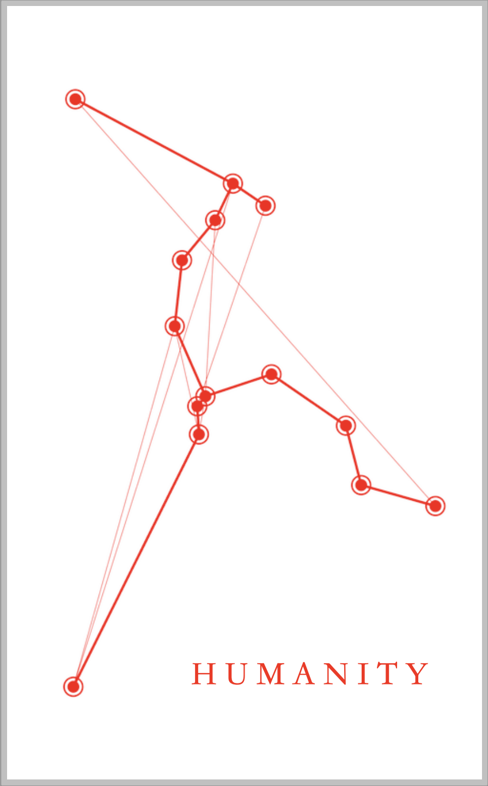
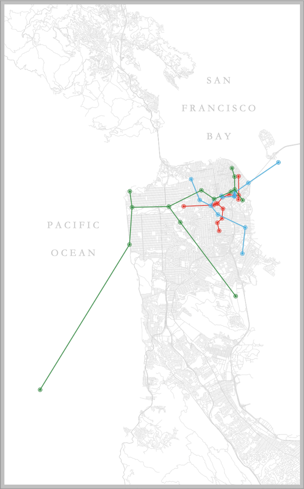

I illustrated my collection of poems, Revival, focusing on a popular emblem of modern mathematics and minimalist style: the network graph. I wanted to show how the same design can morph and fit into diverse contexts. While some of the visualizations are familiar on the surface, others take a bit more digging to understand. Foremost in Revival, I created several maps of San Francisco. If we understand the city as a place of connection, displaying the city through its roads makes intuitive sense. After all, the true structure of roads is a vast, connected network comprised of intersections as nodes and streets as edges. Using this road structure as a backdrop, I then made the following maps:
Forest Map

Green-to-white radial gradient of forested revival centered on Mt. Sutro
River Map

Primary roads of SF as rivers, employing a hydrographic fade to drought
Thematically, I used these maps to contextualize both their respective sections & the broader collection.
I soon recognized that I also needed to provide more context for each poem. In the same way that the collection is a geographically focused text, each poem is driven by some exchange or experience tied to a very specific place. The images at the start of each section aim to show how its following set of poems is bound together.



In these seemingly abstract visualizations, we find that each point represents the location where a poem was conceived or physically written. The image's thin lines are randomly generated flourishes. But the set of thick connecting lines is a minimal spanning tree. This phrase is simply the network term that describes the set of shortest edges connecting all nodes in a graph. It is the essential structure, the backbone of this dataset.

Above, we see these minimal spanning trees in their proper geographical setting, without rotations or randomized transformations. Tangentially, under these conditions, poetry & mathematics give rise to a theory of minimal spanning poems - the proposal that some minimal (though perhaps infinite) set of poems could encapsulate and translate the experience of an entire city or, less ambitiously, of a unique pairing of latitude and longitude. Any honest attempt to create this would be equal parts heroic and futile. My hope is that each visualization adds this dash of novelty to the ordinary; that each poem, each section, does the same. This, after all, is the ritual of renewal: rebirth through active introspection. This is revival.